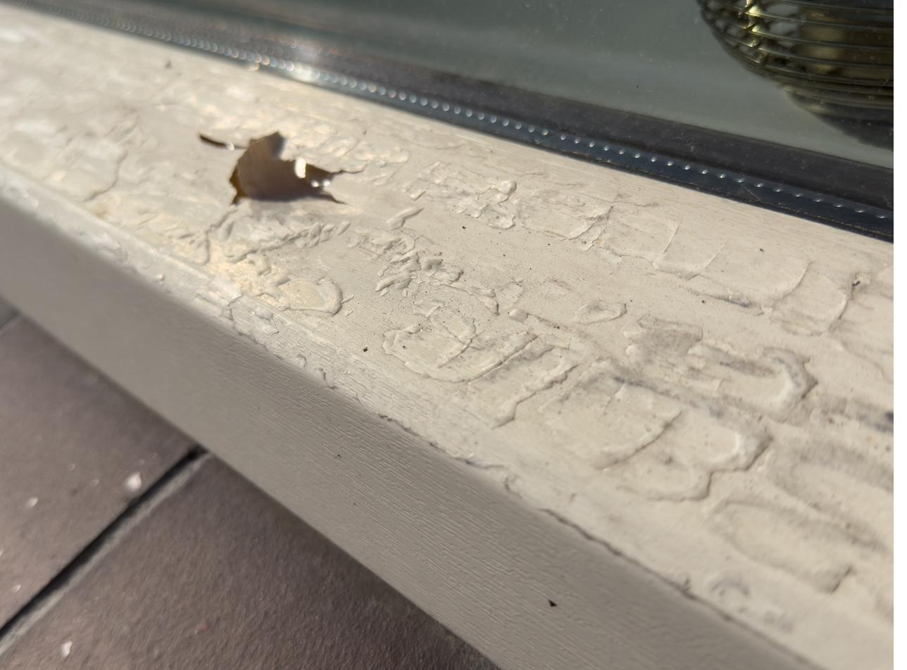
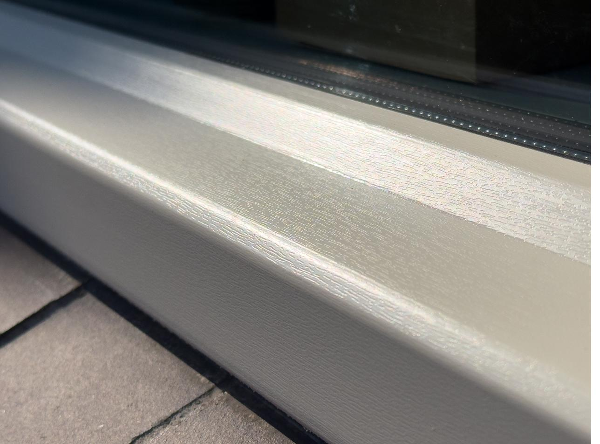

Houtnerffolie.nl legt uit hoe Renolit Exofol werkt: de varianten, de kleuren, wat de folie wel en niet kan, en hoe lang hij meegaat — zonder verkooppraatje.
De basis
Houtnerffolie is een folie die als toplaag op kunststof kozijnen, deuren of gevelpanelen wordt aangebracht. Het oppervlak heeft een geprofileerde structuur die aanvoelt en oogt als hout, terwijl het onderliggende profiel gewoon kunststof blijft — dus onderhoudsvrij, zonder schilderwerk en zonder rot.
Renolit is een van de fabrikanten die deze folie maakt, onder de naam Exofol. De folie bestaat niet uit één laag, maar uit drie: elke laag heeft een eigen functie.
Beschermt tegen UV, regen en vervuiling en heeft zelf de houtnerfstructuur. Kleurloos: de kleur eronder blijft zichtbaar en verbleekt niet.
De enige laag met pigment. Bepaalt de RAL-kleur en volgt de houtnerf- of unistructuur van de toplaag.
Kleurloos hechtmiddel. Zorgt voor de verbinding met het kunststof, aluminium of gecoate staal profiel.
Kleuren & decors
Renolit Exofol is leverbaar in vrijwel elke RAL-kleur, van strak wit tot diep antraciet, en in houtnerf-decors die een echte houtstructuur nabootsen. Een kleine greep uit wat mogelijk is:
Een exacte kleurmatch met bestaande kozijnen — zoals bij een aansluitende renovatie — is ook mogelijk. Vraag naar de mogelijkheden bij je offerte.
Waar het op kan
De meest voorkomende toepassing: kunststof raamkozijnen krijgen een houtlook of kleurafwerking zonder de nadelen van geschilderd hout.
Kunststof en aluminium buitendeuren, inclusief voordeuren, worden met dezelfde folie afgewerkt als de omliggende kozijnen.
Exofol FX wordt ook gebruikt als toplaag op volledige gevelpanelen, met extra weerbestendigheid voor grote, blootgestelde oppervlakken.
Veroudering & onderhoud
Na jaren in de zon kan de toplaag dof worden, de kleur vervagen, of de folie op randen en hoeken loslaten. Dat is normale veroudering van de toplaag — het kozijn zelf is daarmee meestal nog technisch in orde.
Omdat het probleem meestal in de folie zit en niet in het kozijnprofiel, is een nieuwe laag Exofol folie vaak voldoende. Dat is aanzienlijk minder ingrijpend en goedkoper dan het hele kozijn vervangen.
De folie is glad en vuilafstotend. Een sopje volstaat voor regulier onderhoud; voor hardnekkig vuil of lijmresten bestaat een specifieke, niet-oplosmiddelhoudende kozijnreiniger.
Folie vervangen gebeurt buiten, dus weersafhankelijk. Werkzaamheden vinden doorgaans plaats van eind maart tot medio oktober, wanneer temperatuur en droogte geschikt zijn voor een duurzaam resultaat.
Referenties
Een greep uit grotere projecten waarbij kozijnen, deuren of gevels met Renolit Exofol folie zijn afgewerkt.

Voor
NaDeze sectie is opgezet om uitgebreid te worden met voor-na foto's van eigen projecten. Zodra het fotomateriaal binnen is, worden de resterende kaarten hierboven vervangen door echte projectfoto's.
Veelgestelde vragen
Nee. Het profiel eronder blijft kunststof (of aluminium/staal); alleen de toplaag krijgt een houtstructuur en -kleur. Je hebt dus wel de look van hout, maar niet het onderhoud, het schilderwerk of het rotrisico.
De meeste RAL-kleuren zijn zowel in een gladde uni-afwerking als met een houtnerfstructuur (embossing) leverbaar. Bij twijfel over een specifieke combinatie is dat te checken via een stalenboek.
Renolit geeft op deze folie doorgaans 10 jaar garantie. In de praktijk gaat goed aangebrachte folie vaak langer mee, afhankelijk van oriëntatie (zon), onderhoud en de ondergrond.
Dat hangt af van het aantal kozijnen, de kleurkeuze en de staat van de ondergrond. Er staan bewust geen vaste prijzen op deze site — een betrouwbare inschatting vraagt altijd om een offerte op maat.
Ja, dat is juist een veelvoorkomende toepassing: de oude, verouderde folie wordt verwijderd en vervangen door een nieuwe laag, zonder dat het kozijn zelf vervangen hoeft te worden.
iWrap brengt Renolit Exofol folie strak en luchtvrij aan — met 5 jaar garantie op de montage en 10 jaar Renolit-garantie op de folie.